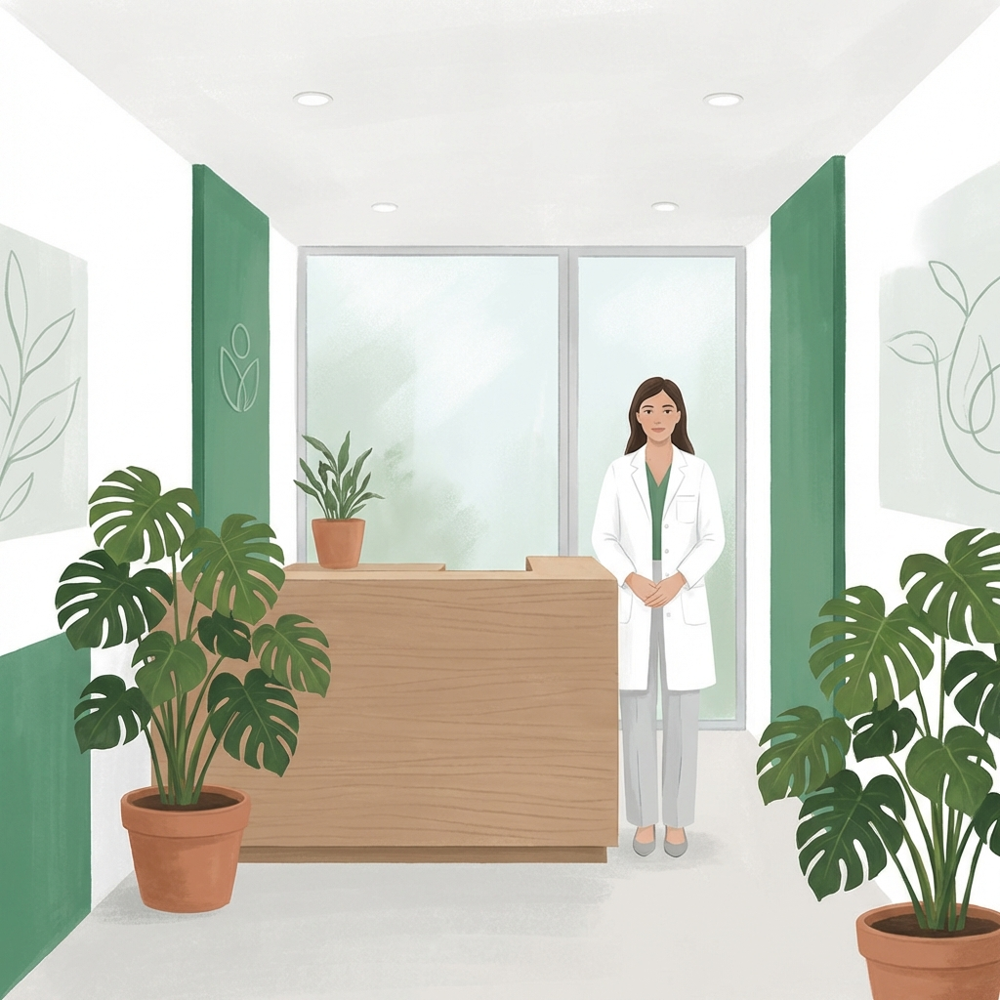

Nutrición ClÃnica de Vanguardia en la Ciudad de México
Transformamos la salud de los capitalinos mediante intervenciones nutricionales basadas en evidencia, con atención presencial en Del Valle y servicio a domicilio.

En el corazón de la Ciudad de México, ClÃnica Denki se erige como un espacio donde la ciencia y la calidez humana se encuentran. No somos un consultorio convencional; somos un centro de nutrición clÃnica especializado en patologÃas complejas que requieren un manejo milimétrico.
Nuestra ubicación estratégica en la Colonia Del Valle nos permite atender a pacientes de toda la zona metropolitana, ofreciendo un refugio de conocimiento y soporte para quienes enfrentan desafÃos de salud metabólica, neurológica o geriátrica.
Nuestra Presencia en la Ciudad
Llevamos la salud a donde te encuentres.
Sede Del Valle
Atención presencial en instalaciones modernas y equipadas con tecnologÃa de medición corporal.
Ver UbicaciónRoma y Condesa
Servicio preferente a domicilio en las zonas más emblemáticas de la ciudad.
Ver CoberturaToda la CDMX
Contamos con capacidad logÃstica para visitas domiciliarias en las principales alcaldÃas.
Saber de DomicilioRigor Médico para la Capital
Nuestro equipo está liderado por la Dra. Lucy Camberos, referente en nutrición clÃnica en México.
Dra. Lucy Camberos: Especialista en nutrición clÃnica con enfoque en salud metabólica y geriátrica, liderando la atención de alta especialidad en CDMX.
Estamos Cerca de Ti
Inicia tu Camino a una Salud Real
Agenda hoy una evaluación en nuestra sede o coordina una visita a tu hogar en cualquier zona de la CDMX.